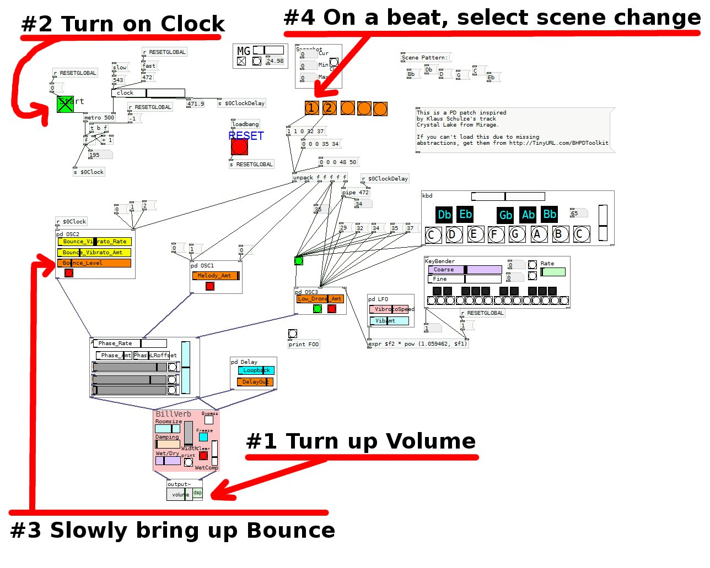

Instructions for Klaus Shulze "Crystal Lake" patch
- Download BH PD Toolkit here: http://TinyURL.com/BHPDToolkit
- Unpack it, add this directory to your PD Search Path (EDIT->Preferences)
- Open the file patches/KlausSchulzeMirageCrystalLake.pd
- See the graphic for operation:
